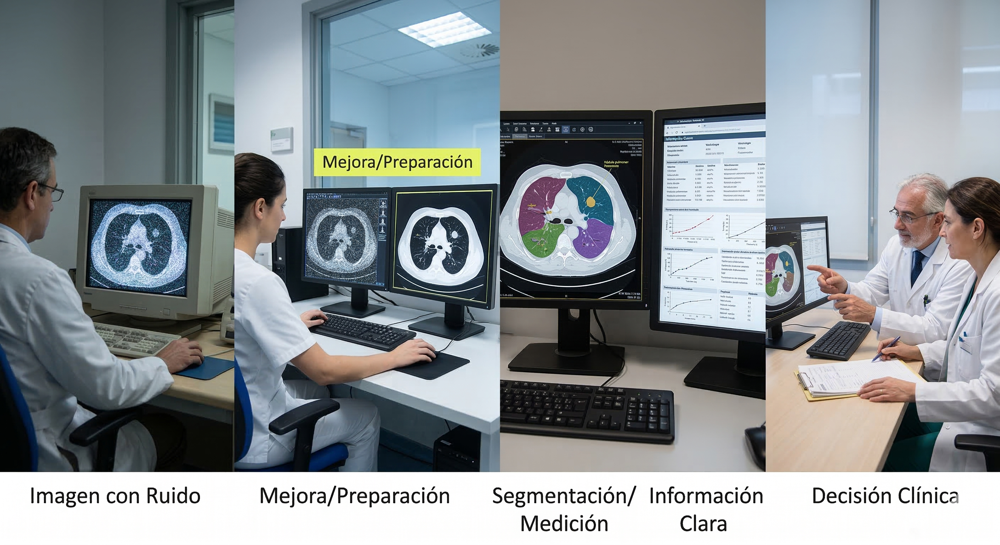
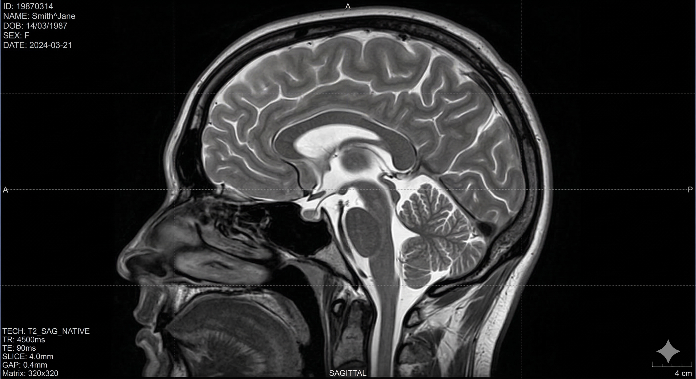
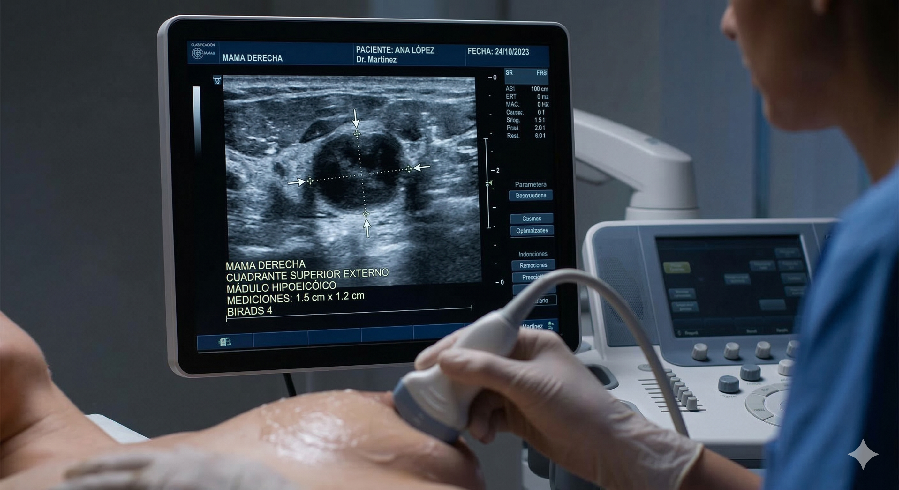
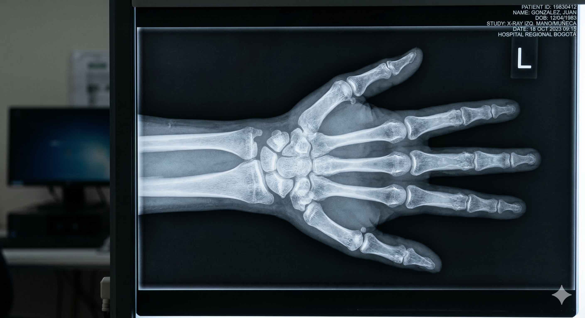
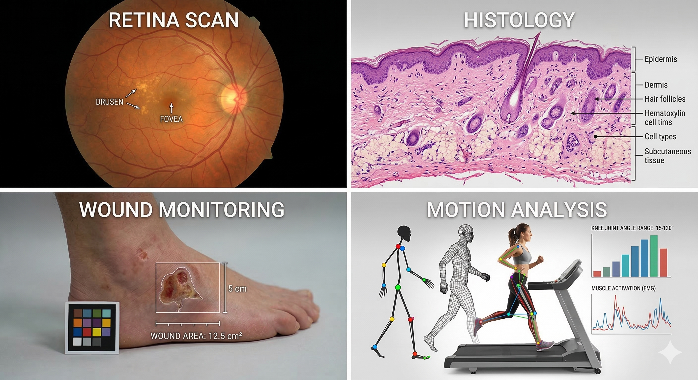
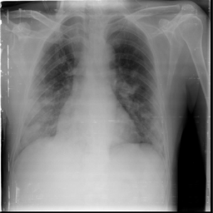
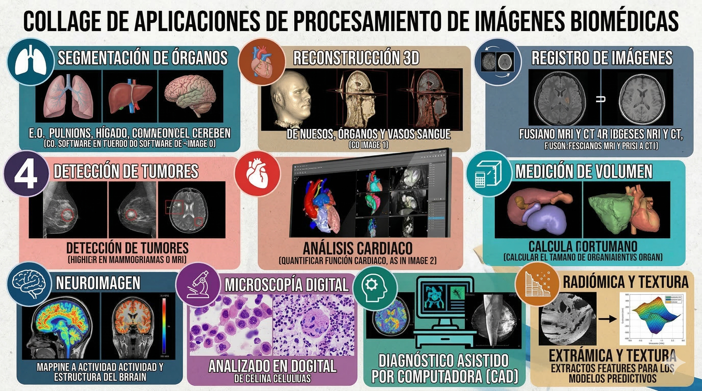

graph LR
A[Cuerpo Humano] --> B{Imagen Biomédica}
B --> C[Ver interior sin cirugía]
B --> D[Seguir cambios temporales]
B --> E[Comparar normal/anormal]
B --> F[Apoyo clínico/investigación]
style B fill:#f96,stroke:#333,stroke-width:2px
De la Segmentación a la Causalidad
La Revolución de la IA en el Diagnóstico por Imagen
Una invitación a explorar un campo con impacto real
Una imagen puede cambiar una decisión clínica
Procesamiento de imágenes e inteligencia artificial en biomedicina
Una charla para descubrir un campo que une salud, tecnología, investigación e impacto humano.
Idea central de hoy: no se trata solo de “ver imágenes”, sino de extraer información útil para comprender mejor el cuerpo, apoyar decisiones y crear soluciones con sentido.
Abrir con tono cercano y entusiasta. Presentar la charla como una invitación, no como una clase técnica. Anticipar que no se requieren conocimientos previos. Interacción: Pedir al público que piense en una sola palabra que asocie con “imagen médica”.
¿Y si una imagen pudiera mostrar algo que el ojo no ve?
Una radiografía, una tomografía computarizada o una resonancia magnética parecen, a primera vista, solo una “foto del cuerpo”. Pero en realidad pueden contener señales sobre:
- Una lesión.
- Una enfermedad.
- Evolución de un tratamiento.
- Riesgo de que algo ocurra.
Pregunta de arranque: ¿te interesaría participar en un campo donde una imagen pueda ayudar a detectar, comprender o anticipar problemas de salud?
Sembrar la pregunta de por qué una imagen puede ser más valiosa de lo que parece. Interacción: Invitar a levantar la mano a quienes nunca se han preguntado cómo “piensan” estas herramientas.
Antes de empezar: una pregunta simple
Cuando piensas en salud y tecnología, ¿qué imaginas primero?
- Equipos hospitalarios
- Cirugía
- Aplicaciones móviles
- Sensores
- Radiografías
- Tomografía computarizada
- Resonancia magnética
- “Inteligencia artificial”
Hoy veremos que estas ideas no están separadas: las imágenes y la inteligencia artificial trabajan juntas.
¿Por qué importan tanto las imágenes en salud?
Permiten observar lo que normalmente no podemos ver directamente.
Mensaje central: las imágenes convierten partes invisibles del cuerpo en información observable.
Un mismo cuerpo, muchas formas de verlo
Radiografía
Útil para observar huesos, alineación y alteraciones por contraste.
Tomografía (TC)
Permite ver cortes del cuerpo y explorar estructuras con detalle.
Resonancia (RM)
Resalta tejidos blandos; valiosa para órganos y estructuras complejas.
Ultrasonido
Observación en tiempo real en contextos clínicos dinámicos.
Idea clave: ninguna imagen lo resuelve todo; cada una aporta algo distinto.
¿Qué significa “procesar” una imagen?
Es trabajar sobre ella para obtener información más útil. No es decoración; es conversión.
graph TD
A[Imagen con Ruido] --> B[Mejora/Preparación]
B --> C[Segmentación/Medición]
C --> D[Información Clara]
D --> E[Decisión Clínica]
style B fill:#bbf,stroke:#333,stroke-width:2px

¿Dónde entra la inteligencia artificial?
La IA ayuda a reconocer patrones y aprender regularidades a partir de miles de ejemplos.
- Sugerir revisión prioritaria.
- Señalar regiones sospechosas.
- Clasificar hallazgos.
- Seguir cambios entre estudios.
graph LR
I1[Img 1] --> L[Aprendizaje de Patrones]
I2[Img 2] --> L
In[Img n] --> L
L --> Out[Salida / Clasificación]
style L fill:#dfd,stroke:#333,stroke-width:4px
Pausa participativa: El Binomio Humano-Máquina
¿Quién hace qué mejor?
Apoyo Computacional
- Señalar regiones llamativas.
- Comparar patrones repetidos.
- Medir con rapidez.
- Ordenar cientos de imágenes.
Juicio Humano
- Integrar contexto clínico.
- Hacer juicio profesional.
- Hablar con el paciente.
- Responsabilidad ética.
Idea central: No es “persona contra máquina”, sino persona con apoyo inteligente.
Casos de Uso: Aplicación Real
Resonancia y Tejidos
- Delimitar regiones complejas.
- Seguir cambios temporales.
- Cuantificar características.

Ultrasonido en Tiempo Real
- Seguimiento dinámico.
- Guía de procedimientos.
- Evaluación funcional inmediata.

Casos de Uso: Aplicación Real II
Radiografía y Soporte
- Mejora de la visibilidad en hallazgos óseos y pulmonares.
- Localización y clasificación asistida de fracturas.
- Apoyo en la priorización de revisión clínica.
- Reducción de variabilidad en la interpretación visual.

Tomografía Axial (TAC)
- Procesamiento de grandes volúmenes de datos volumétricos.
- Separación de regiones y resaltado de estructuras críticas.
- Aceleración de revisiones en contextos de urgencia.
- Reconstrucción anatómica para planeación quirúrgica.
Idea clave: La transición de la imagen plana (RX) a la volumétrica (TAC) demanda herramientas de IA capaces de gestionar la complejidad del dato.
Enfatizar que la TAC genera una cantidad de información que supera la capacidad de revisión manual exhaustiva en tiempos cortos. La IA aquí actúa como un filtro de relevancia.
Más allá del Hospital
Las imágenes biomédicas aparecen en escenarios diversos:
- Análisis de retina y patología digital.
- Imágenes microscópicas e histología.
- Seguimiento de heridas y evaluación funcional por video.
- Rehabilitación y análisis de movimiento.

Rutas para el estudiante (Principiante)
No necesitas ser experto desde el primer día. Nadie entra sabiendo todo.
graph LR
Step1[Curiosidad/Observación] --> Step2[Bases de Imágenes]
Step2 --> Step3[Semilleros/Laboratorios]
Step3 --> Step4[Proyectos Pequeños]
Step4 --> Step5[Línea de Trabajo Propia]
style Step1 fill:#fff4dd
style Step5 fill:#d4edda
Invitación final: Acércate a los laboratorios (Procesamiento de Señales, Marcha, Bioinstrumentación). La próxima imagen que cambie una vida podría pasar por tus manos.
Preguntas para discutir
- Busca en internet y describe una aplicación de IA en imágenes biomédicas que les parezca sorprendente.
- ¿Cuáles crees que deberían ser las actividades que se deben realizar para lograr el desarrollo de la aplicación?
- ¿Cuál es el riesgo más crítico en la aplicación?
- Usando un LLM, ¿Podrías decir que tiene la siguiente radiografía? Cual fue el prompt que utilizó?

Gracias por su atención

Referencias
- González & Woods (2018). Digital Image Processing.
- Rangayyan (2005). Biomedical Image Analysis.
- Shen et al. (2017). Deep learning in medical image analysis.
- Litjens et al. (2017). Survey on deep learning.
- Topol (2019). High-performance medicine.
- WHO (2021). Ethics and governance of AI.